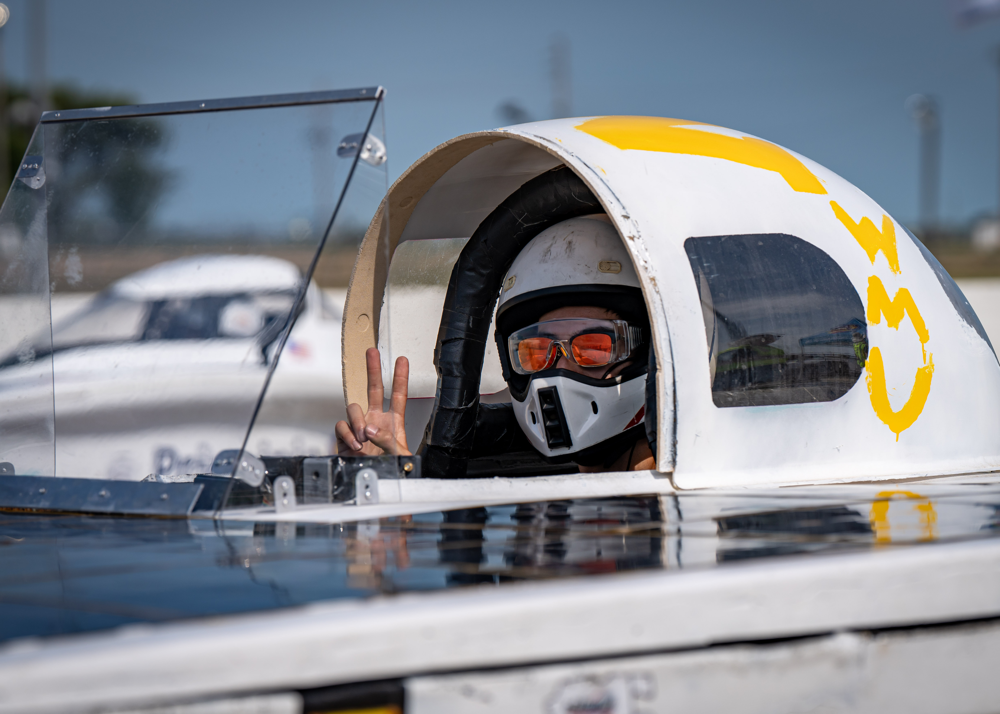

Upcoming Races
American Solar Challenge
Electrek FSGP & ASC 2026
Date:July 21st - August 1st
Location: United States
A multi-day collegiate solar vehicle race testing efficiency, reliability, and endurance across long-distance routes.
Race Details
American Solar Challenge 2026
Electrek FSGP 2026
Date: July 21st - July 23rd
Location: 5523 Birchdale Rd, Brainerd, MN 56401
Results & Stats
- Placement: TBD
- Total Distance: ~1,500 miles
- Average Speed: TBD
- Energy Efficiency: TBD



Race Details
American Solar Challenge 2026
Electrek ASC 2026
Date: July 25th - August 1st
Location: Minneapolis to Amarillo
Results & Stats
- Placement: TBD
- Total Distance: ~1,500 miles
- Average Speed: TBD
- Next Stage Stop: TBD


Live Solar Car Tracking
Real-Time Vehicle Tracker
Follow the WMU Sunseeker solar vehicle during testing and competition. Live telemetry data provides vehicle location, speed, battery status, and race information directly from the car.
Vehicle Status
Connecting to solar car...
Past Races
ASC Qualifier
Year:
Regional Solar Showcase
Year:
Live Race Telemetry
Telemetry Dashboard
During testing and competition, our telemetry system streams live engineering data from the vehicle. Team members can monitor speed, battery state of charge (SOC), power consumption, temperatures, GPS location, and other critical systems in real time.
Vehicle Information
- Status
- Loading telemetry...
Live Data
- Waiting for telemetry...